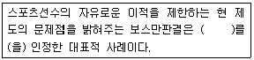
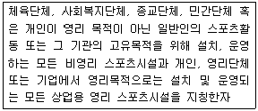

스포츠경영관리사 (2006-01-20 기출문제)
1과목: 스포츠 산업론
1. 방송상에서 스포츠경기 중계방송시 기대효과가 아닌것은?
- 광고 수입의 증대
- 유료시청 수입 증대
- 대외 이미지 제고
- 중계방송 기술력수입
(정답률: 72%)

2. 국내 스포츠 인증제도 사업의 구성이 아닌것은?
- 스포츠용품의 품질과 운동 가능성을 과학적으로 평가하여 판정하는 인증 제도 도입
- 국내스포츠 용품 제조업의 특성에 적합한 인증 부여할 수 있는 ISO 인증기관 운영
- 산업의 IT화를 통한 스포츠 용품
- 스포츠 용품 표준인증 및 연구 개발 자료분석을 위한 인증 센터 구축
(정답률: 79%)
3. 스포츠용품제조업과 스포츠용품유통업을 스포츠용품업이라고 할 때 스포츠활동업이 아닌것은?
- 헬스관련 스포츠의류 도,소매판매
- 헬스장 웨이르 기구 수리업
- 헬스장 웨이트 기구의 생산
- 헬스장 운영
(정답률: 71%)
4. 국내스포츠 산업의 현황으로 맞는것은?
- 스포츠용품의 부가가치는 디자인보다 생산공정에서 크게 나타났다.
- 프로구단 및 휘트니스 클럽 시장은 1997년 외혼위기 초래 이후 지금까지 꾸준한 감소세를 보이고 있다.
- 골프장 운영업은 지나친 업체 수 증가로 인해 성장잠재력이 거의 없다.
- 국내 스포츠용품시장은 내수시장이 커지고 있으나외국기업들과 극심한 경쟁에 놓여있다.
(정답률: 67%)
5. 다음중 스포츠산업의 특성을 가장 정확하게 설명한 것은?
- 스포츠산업은 신체활동을 근간으로 한 복합적인 산업분류구조를 가진 산업이다.
- 스포츠산업은 시간절약형 산업이다.
- 스포츠산업은 지식중심형 산업이다.
- 스포츠산업은 환경중심형 산업이다.
(정답률: 77%)
6. 스포츠 소비자에 대한 정보수집 방법이 아닌것은?
- 전시회 개최
- 전화인터뷰
- 설문지
- 2차자료검색
(정답률: 72%)
7. 관람 스포츠의 소비자 분류로 올바른 것은?
- 획득시장 - 스폰서(기업소비자)의 집단
- 획득가능시장 - 관람의도가 강한 소비자 집단
- 산업재시장 - 관람의도가 중간인 소비자 집단
- 잠재시장 - 관람경험 소비자 집단
(정답률: 63%)
8. 스포츠 시설 현황에 포함되지 않는 것은?
- 국,공,사립의 초등학교, 중학교, 고등학교 및 특수제학교에 설치된 스포츠 시설
- 국가 또는 지방 자치단체가 설치하여 직접관리 운영하고 있거나 위탁하고 있는 스포츠 시설
- 종업원의 복리후생을 위해 설치되어 있는 직장 오락시설
- 개인 또는 영리 단체가 영리를 목적으로 설치하고 있는 스포츠 시설
(정답률: 74%)
9. 다음 중 관람스포츠나 참여스포츠와 연관된 스포츠산업의 특성이 아닌 것은?
- 시간소비형 산업이다.
- 공간,입지중시형 산업이다.
- 오락성이 중시되어 산업이다.
- 단일한 산업으로 타 산업과 관련이 있다.
(정답률: 74%)
10. 다음 스포츠정보 중 2차 자료가 아닌 것은?
- 손익계산서
- 체육백서
- 회원관리자료
- 면접자료
(정답률: 59%)
11. 다음 중 지방자치단체가 스포츠사업을 통하여 지역발전 효과를 모색하는 유형이 아닌 것은?
- 소싸움축제, 꽃 박람회 등의 이벤트 개발
- 월드컵이나 올림픽 등 대형 스포츠이벤트 유치
- 해양스포츠축제나 스포츠댄스 페스티벌 등 스포츠이벤트의 지역 자체 개발
- 스포츠파크화 사업을 통한 각 종목 전지훈련 장소 제공 또는 대회유치
(정답률: 64%)
12. 헬스클럽과 같은 참여스포츠와 프로축구와 같은 관람스포츠에 대한 설명으로 옳은 것은?
- 프로스포츠리그는 진입장벽이 낮다.
- 프로스포츠리그는 독점적으로 운영하므로 가격순응자(Price taker)역할을 한다.
- 헬스클럽 같은 참여스포츠는 시장환경이 경쟁적이어서 개별업자가 시장가격에 영향을 미치지 못한다.
- 프로스포츠 팀은 치열한 경쟁을 하므로 상품을 공동 생산할 수 없다.
(정답률: 34%)
13. 다음 중 국민체육진흥기금의 주요 재원에 해당하는 것은?
- 프로야구경기 입장수입
- 복권 및 복권기금법에 의해 배분된 복권수입금
- 프로축구 방송중계권료
- 경마사업에 따른 수익금
(정답률: 58%)
14. 다음 중 스포츠 산업이 성장할 수 있는 배경이 아닌 것은?
- 주 5일 근무가 전면 확대되고 있다.
- 우리나라 국민소득이 지속적으로 증가하고 있다.
- 국내 영화나 음반 산업이 비약적으로 성장하고 있다.
- 인터넷으로 스포츠경기 일정 등 정보를 쉽게 얻을 수 있다.
(정답률: 74%)
15. 프로스포츠와 지방자치단체와의 관련성에 대한 설명으로 옳지 않은 것은?
- 해당 지역내에 프로스포츠 경기가 개최될 경우 외부로부터 관광수익을 기대할 수 있다.
- 경제적인 효과를 관중입장수입, 프로팀 지역내 소비지출, 원정팀 소비지출 등이 있다.
- 특정지역에 기반을 둔 프로스포츠의 프랜차이즈 제도는 아직 국내에서 실현되고 있지 않다.
- 경제적인 효과외에는 비경제적인 효과로 지역연대성 강화 효과가 있다.
(정답률: 75%)
16. 스포츠산업 정보화 지표에 해당되지 않는 것은?
- 스포츠 정보 인프라 보급
- 스포츠 정보 인프라 설계
- 스포츠 정보 인프라 이용
- 스포츠 정보화 인력 및 투자
(정답률: 50%)
17. 다음 중 스포츠산업의 개념으로 옳은 것은?
- 스포츠 관련 재화와 서비스를 생산, 유통시켜 고부가가치를 창출하는 일체의 활동이다.
- 스포츠산업은 국민거시경제 지표 중 하나로서 문화 컨텐츠산업이다.
- 스포츠산업은 문화산업, 건강산업을 모두 포함하는 종합산업이다.
- 스포츠산업은 인간 및 동물들의 스포츠행위 활동을 모두 포함한다.
(정답률: 59%)
18. 일반적으로 입장료 부문의 이윤극대화 조건에 맞는 입장료 보다 실제 입장료가 낮은 이유는?
- 가격차별화 전략이다.
- 단체관람객을 할인해주기 때문이다.
- 소비자(관중)잉여를 공급자(구단)의 잉여로 만들기 위해서이다.
- 보조상품의 매출을 늘려 입장수입, 보조상품수입을 합한 이윤극대화를 이루기 위해서이다.
(정답률: 55%)
19. 스포츠 용품의 구매행동을 위한 의사결정과정으로 올바른 것은?
- 욕구환기-정보탐색-선택대안의 평가-구매행위-구매후의 평가
- 정보탐색-선택대안의 평가-욕구환기-구매행위-구매후의 평가
- 구매후의 평가-선택대안의 평가-정보탐색-욕구환기-구매행위
- 구매후의 평가-정보탐색-욕구환기-선택개안의 평가-구매행위
(정답률: 62%)
20. 스포츠의 특성에 따라서 스포츠산업을 분류할 경우 스포츠 서비스업에 해당하지 않은 것은?
- 스포츠경기업
- 스포츠마케팅업
- 스포츠정보업
- 스포츠용품유통업
(정답률: 56%)
21. 향후 인터넷이나 무선이동 통신의 발전으로 스포츠 컨텐츠산업으로 부각될 사업부분이 아닌 것은?
- 스포츠 텔레폰 서비스 시장
- 스포츠 영상 이동 무선데이타(IMT2000)서비스시장
- 스포츠 시설 설치업
- 스포츠 인터넷 스포츠 방송중계 시장
(정답률: 68%)
22. 참여정부의 국민체육진흥 5개년계획에 해당하니 않는 사항은?
- 체육용품, 시설, 서비스업의 육성 및 활성화 지원
- 스포츠 산업 전문인력 양성
- 스포츠산업진흥 관련 법적 기반 마련
- 스포츠산업 관련 대학 증설지원
(정답률: 65%)
23. 스포츠 소비에서 서비스의 질 개념과 이에 대한 설명으로 옳지 않은 것은?
- 고객 본위성-이용자에 대한 개인적인 관심을 가지고 주의를 기울여 보살펴 주는 것
- 응답성-약속된 서비스를 정확하게 그리고 확실하게 시행하는 것
- 보증성-스텝의 신용을 전하고 스텝들이 친절하게 지식, 경험을 제공하는 것
- 가시성-시설이나 비품 등 종업원의 태도라고 하는 눈에 보이는 서비스
(정답률: 41%)
24. 문화관광부가 제시한 국내 스포츠산업 대 분류는?
- 스포츠용품업, 스포츠시설업, 스포츠서비스업
- 스포츠시설업, 스포츠오락업, 스포츠지원업
- 스포츠용품업, 스포츠이벤트업, 스포츠마케팅업
- 스포츠용품업, 스포츠유통업, 스포츠서비스업
(정답률: 72%)
25. 스포츠의 본질적 특성이 아닌 것은?
- 게임의 특성
- 규칙의 특성
- 놀이의 특성
- 정치의 특성
(정답률: 78%)
2과목: 스포츠 경영론
26. 다음 중 스포츠에이전시의 유형으로 거리가 먼 것은?
- 국제스포츠 마케팅 에이전시
- 선수관리 에이전시
- 라이센싱 에이전시
- 시설관리 스포츠 에이전시
(정답률: 54%)
27. 선진 스포츠 문화를 가지고 있는 미국이나 유럽에서 시행되는 프로그램으로서 유소년팀, 새미프로 등 하위리그를 통해 다양한 자체선수를 선발하는 제도는?
- 드래프트제도(Draft system)
- 자유계약선수제도(Free agent)
- 샐러리캡(Salary cap)
- 팜시스템(Farm system)
(정답률: 53%)
28. 스포츠경영의 기능의 하나로서 2인 이상의 조직원이 업무 활동에 서로 협조할 수 있도록 분류하는 단계는?
- 기획
- 조직
- 지휘
- 조정
(정답률: 60%)
29. 스포츠의 SWOT 분석에서 강점(Strength)에 대한 설명으로 옳지 않은 것은?
- 스포츠 행사 협찬비용에 대한 세제혜택을 받을 수 있다.
- 스포츠는 종업원의 사기진작 및 생산성 향상을 가져올 수 있다.
- 장기적으로 경제회복기에는 스포츠 활동 인구의 증가로 인해 스포츠 산업의 미래는 낙관적이다.
- 스포츠 후원은 기업의 제품 이미지를 제고시킬 수 있다.
(정답률: 45%)
30. 스포츠 조직에서 인적자원관리의 중요성이 강조되는 이유가 아닌 것은?
- 법적, 제도적 요소의 개입 가능성 감소
- 인적자원 관리를 통한 경쟁우위 확보
- 고용주의 피고용자에 대한 사회적 책임 증가
- 인적자원관리와 고객만족간의 연계성 강화
(정답률: 61%)
31. 스포츠재무관리의 궁극적인 목표로 올바른 것은?
- 스포츠조직 가치의 극대화
- 스포츠조직 가치의 유지
- 스포츠조직 자본의 안정적 투자
- 스포츠조직 자본의 유지
(정답률: 54%)
32. 축구공을 생산하는 A회사의 고정비율이 10,000,000원이고, 공 한 개당 변동비율이 10,000원일 때 4,000개 생산수준에서 판매량 역시 4,000개라면 A회사의 손익분기점을 달성하기 위한 축구공 한 개의 가격은?
- 10,000원
- 12,500원
- 15,000원
- 20,000원
(정답률: 54%)
33. 경영전략의 유형에서 대부분의 대규모 조직이나 복잡한 조직에서 많이 이용되며 주로 경기의 변화가 아주 심하거나 침체된 상황에서 두가지 이상의 전략이 동시에 사용되는 전략은?
- 안정전략
- 혼합전략
- 방어전략
- 성장전략
(정답률: 52%)
34. 소속선수 연봉합계가 일정액을 초과할 수 없도록 만들어진 법은?
- 인센티브
- 샐러리 캡
- 래리버드롤
- 선수 드래프트
(정답률: 71%)
35. A 스포츠센터의 자기자본은 45억 6천만원이고, 수익은 76억 3천만원, 사업이익(영업이익)은 13억 8천만원, 경상이익은 9억7천만원, 당기이익은 7억8천6백만일 때 A 스포츠센터의 자기자본 순이익률은?
- 9%
- 14%
- 17%
- 21%
(정답률: 53%)
36. 자기자본 35억, 장기차입자본 25억, 총자본 안정율은?
- 25%
- 35%
- 60%
- 100%
(정답률: 56%)
37. 스포츠를 이용하는 기업이 직접금융을 통해 자금 조달할 수 있는 방법으로 적절하지 않은 것은?
- 주식방행
- 채권발행
- 민자유치
- 스폰서십 프로그램 참여
(정답률: 44%)
38. 보스톤 컨설팅 그룹 매트릭스 중 Cash Cow 영역에 대한 설명으로 옳은 것은?
- 현금을 많이 소비할 뿐만 아니라 많이 창출함
- 약한 시장위치로 인해 현금창출과 시장점유율 증진이 어려움
- 낮은 시장성장률과 높은 시장점유율을 보임
- 시장잠재력은 높은 편이지만 시장점유율을 높이기 위해서는 많은 지원 필요
(정답률: 53%)
39. 동기부여 이론중 브롬(Vroom)의 기대이론을 구성하고 있는 기본변수의 개념에 해당되지 않는 것은?
- 기대감
- 유의성
- 수단성
- 피드백
(정답률: 50%)
40. 효율적인 생산관리의 기본원칙인 3S 원칙을 스포츠조직에 적용할 수 있다. 다음 중 3S원칙의 내용으로 맞는 것은?
- 표준화, 복잡화, 일반화
- 표준화, 단순화, 전문화
- 다양화, 단순화, 일반화
- 다양화, 복잡화, 전문화
(정답률: 57%)
41. 다음 중 스포츠경영에 영향을 미치는 내부환경 요소는?
- 경제
- 소비자
- 조직
- 인구
(정답률: 70%)
42. 스포츠조직 설계에 영향을 미치는 요인으로 올바른 것은?
- 규모, 생활주기, 정보, 전략
- 환경, 전략, 기술, 사람
- 생활주기, 전략, 정보, 기술
- 사람, 생활주기, 규모, 정보
(정답률: 58%)
43. 인적자원관리활동 중 효과적인 업무수행을 위해 필요한 구체적인 기술이나 지식을 습득하도록 하는 것은?
- 직무분석
- 교육훈련
- 선발
- 보상
(정답률: 68%)
44. 스포츠 에이전트가 선수의 시장가치 증진을 위하여 이행하는 행동으로 적절하지 않은 것은?
- 선수가 운동에만 전념하게 하여 경기력을 최대한 향상시키도록 한다.
- 선수를 대신하여 대리연봉협상을 임한다.
- 선수의 보증광고 가치를 증진시킨다.
- 축적된 선수의 재산을 효과적으로 관리한다.
(정답률: 59%)
45. 유동자산이 213,225원, 유동부채 85,290원, 총자산 843,469원, 당기순이익 109,264원일 때 유동비율은 얼마인가?
- 150%
- 200%
- 250%
- 350%
(정답률: 59%)
46. 체육, 스포츠 현장에서 발생되는 법적 문제에 관한 내용이 아닌 것은?
- 사고를 미연에 방지하고, 불가항력적 사고가 발생하였을 때는 충분한 보상이 이루어지도록 보상제도 구현이 요구된다.
- 피해자, 지도자를 보호하기 위한 특별법이 요구된다.
- 체육, 스포츠 참가자 및 지도자들은 보험상품에 가입하여 만일의 사고에 대비해야 한다.
- 국내 모든 체육시설은 법률에 의하여 의무적으로 회원을 대상으로 한 단체 상해보험가입이 규정되어 있다.
(정답률: 57%)
47. 민츠버그의 조직구조 유형에서 대규모 조직에서 흔히 볼 수 있으며 조직의 작업이 철저하게 세분화되어 있는 구조는?
- 전문적 관료제 구조
- 에드호크러시
- 기계적 관료제 구조
- 단순구조
(정답률: 57%)
48. Blau와 Scott의 스포츠 조직을 “조직의 주 수혜자”를 변수로 하여 분류한 유형이 아닌 것은?
- 호혜조직
- 성취조직
- 봉사조직
- 단순조직
(정답률: 36%)
49. 다음 ( )에 알맞은 것은?

- 직업선택의 자유
- 트레이드의 자유
- 계약의 자유
- 샐럴리 캡
(정답률: 63%)
50. 다음 중 스포츠 에이전트의 업무에 해당되지 않는 것은?
- 연봉계약 대행 서비스
- 선수체력관리 및 기술지도
- 투자자문과 수입관리
- 법률 및 세무자문
(정답률: 70%)
3과목: 스포츠 마케팅론
51. 경쟁자 분석에서 경쟁자의 추세를 파악하기 위한 방법으로 적합하지 않은 것은?
- 정확한 관련 정보지를 탐독
- 졍쟁자의 지역을 자주방문
- 경쟁자의 위기상황 관찰 및 분석
- 경쟁제품(상품)을 구입
(정답률: 32%)
52. 스포츠이벤트의 설계 시에 고려해야 할 사항 중 상대적으로 그 중요성이 떨어지는 것은?
- 운동선수와 경기장
- 소비자들의 선호도
- 후원업체의 전재여부
- 스포츠용품 제조업체
(정답률: 57%)
53. 프로그램 수명 주기를 연장시키기 위해 기존의 프로그램으로 새로운 시장을 개발하는 전략은?
- 시장투입전략
- 시장개발
- 프로그램 다양화
- 프로그램 개발
(정답률: 44%)
54. 스포츠광고 홍보에 대한 설명으로 옳지 않은 것은?
- 스포츠홍보는 마케팅 프로모션에서 사용되어지는 하나의 도구이다.
- 스포츠홍보와 광고의 차이점은 비용 지불에 있다.
- 스포츠광고 개발과정은 컨셉트, 광고 테마 또는 아이디어로 시작한다.
- 스포츠광고에서 주된 결정들은 매체와 비용의 관계가 있다.
(정답률: 34%)
55. A구단의 입장권 가격은 특석 1만원, 일반석 5,000원, 군/경할인 3,000원으로 3종류이다. 오늘 경기에서 A구단은 특석 1,000장, 일반석 10,000장, 군/경할인 1,000장을 판매하였다. A구단의 오늘 평균 입장료는 얼마인가?
- 6,000원
- 5,000원
- 5,250원
- 4,500원
(정답률: 54%)
56. 스포츠상품 중 참여스포츠제품에 포함되는 것이 아닌 것은?
- 시설
- 제공스포츠 서비스의 질
- 제공프로그램
- 팀의 경기력
(정답률: 60%)
57. 매출액, 광고비, 무게, 소득 등 모두를 측정하여 사칙연산이 가능한 척도는?
- 비율척도
- 등간척도
- 서열척도
- 명목척도
(정답률: 49%)
58. 시장세분화에 대한 설명으로 옳지 않은 것은?
- 각 세분시장에 대한 접근가능성을 평가해야 한다.
- 두 개 이상의 기준을 동시에 적용하여 시장을 세분화 할 수 있다.
- 각 세분시장을 위해 적합한 마케팅 믹스를 조정해야 한다.
- 세분시장내 소비자가 마케팅 믹스에 대한 반응은 유사하다.
(정답률: 31%)
59. 다음 중 설문지 작성 시 유의할 사항으로 틀린 것은?
- 조사목적에 관련이 있는 질문만을 설문지에 포함한다.
- 어느 한 방향으로 대답을 유도하거나 혹은 편견이 들어있는 질문은 회피한다.
- 조사대상자가 대답하기 어려운 질문을 피한다.
- 물음 하나에 두 가지 이상의 질문이 포함 될 수 있다.
(정답률: 57%)
60. 스포츠소비자의 정보탐색 활동 중 내적 탐색 원천은?
- 가족
- 친구
- 기억
- 대중매체
(정답률: 56%)
61. 스포츠마케팅 믹스에서 4P에 해당하지 않는 것은?
- Program
- Price
- Place
- Promotion
(정답률: 52%)
62. 비확률 표본추출방법 중 조사자가 자의적인 기준을 설정하여 표본을 선정하는 방법은?
- 편의표본추출
- 할당표본추출
- 단순무작위표본추출
- 군집표본추출
(정답률: 44%)
63. 다음 중 홍보(Publicity)에 대한 설명으로 옳지 않은 것은?
- 홍보는 PR(Public Relations)의 가장 대표적인 수단으로 활용된다.
- 홍보는 광고와 달리 매체에 실린 홍보 메시지에 대해 기업이 그 비용을 지불하지 않는다.
- 홍보는 뉴스기사 형태의 객관적인 정보를 제공하기 때문에 신뢰성이 높다.
- 홍보는 주요 기법으로 견본품, 쿠폰, 사은품 증정, 경품행사 등이 있다.
(정답률: 33%)
64. 스폰서 쉽 유치과정 중 계획 단계에서 행하는 것은?
- 시장조사
- 목표설정
- 대상기업물색
- 제안서 제시
(정답률: 34%)
65. 기업의 마케팅 전략의 주요 대상은?
- 표적시장
- 세분시장
- 초점시장
- 일차적 시장
(정답률: 54%)
66. 유형의 스포츠제품에 대한 도입기의 가격관련 전략은 대체로 고가정책을 추구한다 그 이유로 올바르니 않은 것은?
- 경쟁자가 다수이기 때문이다.
- 생산원가가 높지 않기 때문이다.
- 높은 촉진 비용을 충당하여야 하기 때문이다.
- 신제품을 조기에 구매하는 사람들은 대체로 가격에 개의치 않고 고소득층이기 때문이다.
(정답률: 31%)
67. 매복마케팅(Ambush mareting)의 특징이 아닌 것은?
- 경쟁관계에 있는 공식스폰서에 못지않은 비용을 투입한다.
- 사전에 철저하게 계획되거나 의도된 활동이 아니다.
- 공식스폰서가 얻을 수 있는 효과를 상대적으로 약화시킨다.
- 특정 제품이나 기업의 촉진을 목적으로 한다.
(정답률: 53%)
68. 스포츠와 미디어의 관계에 대한 설명으로 옳지 않은 것은?
- 미디어는 스포츠에 대한 정보를 대중들에게 제공한다.
- 미디어가 스포츠 쪽에 보다 많이 의존하고 있다.
- 미디어는 스포츠 단체에 재정적인 도움을 제공한다.
- 스포츠와 미디어는 공생관계를 형성하고 있다.
(정답률: 57%)
69. 표본추출법에 대한 설명으로 옳은 것은?
- 조사자의 편의상 표본을 선정하는 방법이 단순 무작위 표본추출방법이다.
- 세분집단별 개인을 조사대상으로 선정하는 것이 다단계 표본추출방법이다.
- 세분집단별 동일 수의 대상을 선정하는 것이 바람직하다.
- 집단을 추출하고 구성원을 선정하는 방법이 확률표본추출법에 속한다.
(정답률: 39%)
70. 일반인들에게 많이 알려져 있지 않은 지역의 스포츠이벤트를 홍보하는 데 있어 관여도(involvement)가 높은 집단에 적용할 수 있는 가장 적절한 촉진전략은?
- 가능한 한 간단한 정보만을 공중파 방송을 통해 제공한다.
- 가능한 한 간단한 정보만을 잡지를 통해 제공한다.
- 가능한 한 간단한 정보만을 일간지를 통해 제공한다.
- 가능한 한 구체적인 정보를 표적으로 하는 집단이 선호하는 매체를 통해 제공한다.
(정답률: 60%)
71. TV방송국이 스포츠상품을 필요로 하는 이유로 적당하지 않은 것은?
- 스포츠는 차별화된 프로그램 공급원이기 때문이다.
- 스포츠가 드라마에 비해 경제적이기 때문이다.
- 스포츠는 드라마와 같이 시청률을 예측하기 어렵기 때문이다.
- 스포츠에 대중이 관심을 가지고 특정 기업이 광고주로 참여할 수 있기 때문이다.
(정답률: 50%)
72. 다음 중 PR의 구체적인 목적으로 거리가 먼 것은?
- 해당 스포츠조직에 대한 정보를 제공한다.
- 스포츠에 대한 가치와 중요성을 교육하는 것이다.
- 소비자가 제품의 수명주기를 연장하기 위함이다.
- 스포츠조직에 대한 잘못된 인식이나 태도를 변화시키는 것이다.
(정답률: 42%)
73. 스포츠 스폰서십에 참여하는 기업에게 제공하는 혜택중에서 경쟁사의 접근을 차단해 주는 스폰서십 혜택은?
- 로고 사용권
- 제품영역권 독점권
- 보드 광고권
- TV광고 우선권
(정답률: 63%)
74. 다음은 중계료의 협상 시의 예이다.설명이 맞는 것은?
- 방송사들이 서로 경쟁을 하는 경우에는 경매를 하게 되어 생산자 측에 손해를 보게 된다.
- 방송사들이 담합을 하더라도 중계료는 경기의 희소성 때문에 방송사들은 실제로 별로 이득이 없다.
- 방송사 A사, B사 중 만일 A사가 높은 가격을 제시하면 A사를 우선 협상자로 지정할 수 있다.
- 방송사 A사, B사 중 만일 A사가 높은 가격을 제시하여 원한다 하더라도 생산자측은 윤리적 문제로 더 높은 가격을 받아내기 힘들어진다.
(정답률: 66%)
75. 제품의 수명주기상 이익의 극대화와 시장 점유율 방어를 마케팅의 목적으로 하는 단계는?
- 도입기
- 성장기
- 성숙기
- 쇠퇴기
(정답률: 48%)
4과목: 스포츠 시설론
76. 체육관 바닥 재질을 단풍나무로 시공한 경우 이에 대한 설명으로 틀린 것은?
- 품위가 있고 고품격스럽고 면적이 넓어보인다.
- 고가의 시설비가 소요된다.
- 바닥표면 보호에 어려움이 있다.
- 개별보수가 매우 용이하다.
(정답률: 41%)
77. 다음 중 체육시설이 유형구분으로 올바른 것은?
- 경기형, 레저형, 생활형, 수련중
- 경주형, 레저형, 모험형, 수련형
- 레저형, 생활형, 수련형, 경주형
- 생활형, 경주형, 경기형, 레저형
(정답률: 53%)
78. 체육시설의 설치 및 이용에 관한 법률 중 벌칙에 대한 설명으로 옳은 것은?
- 사업승인 없이 신고체육시설의 시설을 설치한 자는 3년 이하의 징역 또는 1천만원 이하의 벌금에 처한다.
- 등록을 하지 아니하고 스포츠시설업 영업을 한 자는 2년 이하의 징역 또는 500만원 이하의 벌금에 처한다.
- 안전위생기준에 위반하였거나 영업의 패쇄명령 또는 정지명령을 받고서도 영업을 한 자는 1년 이하의 징역 또는 300만원 이하의 벌금에 처한다.
- 시설의 종업원이 그 법인 또는 개인의 업무에 관하여 위반행위를 한 경우 그 법인은 벌금형을 받지 아니한다.
(정답률: 44%)
79. 다음 중 체육시설의 설치, 이용에 관한 법률에서 정의한 체육시설이란?
- 체육활동에 지속적으로 이용되는 시설과 그 부대시설
- 체육활동의 터전으로서 운동을 통하여 건강과 즐거움을 추구하는 공간
- 운동에 필요한 물적인 여러가지 조건을 인공적으로 정비한 시설과 용기구
- 운동학습을 위한 각종의 운동공간
(정답률: 36%)
80. 체육시설의 설치 및 이용에 관한 법률 제10조 제1항 제2호의 규정에 의한 신고체육시설업이 아닌 것은?
- 골프장연습장
- 수영장업
- 승마장업
- 볼링장업
(정답률: 35%)
81. 스포츠 시설 이용자들에 대하여 유사한 특징을 갖는 사람들을 그룹으로 나눈 후 그들을 위한 마케팅 전략으로 옳은 것은?
- 차별화 전략
- 세분화 전략
- 집중화 전략
- 무차별 전략
(정답률: 50%)
82. 스포츠시설 사업이 지역발전에 미치는 효과 중 간접효과가 아닌 것은?
- 입장료 수입, 광고수입, 부대수입의 효과
- 지역민의 자긍심과 연결되는 상징적 효과
- 개최도시에 생기는 새로운 역량의 사회, 정치적인 효과
- 지역개발이 효과적으로 이루어지는 경제적인 효과
(정답률: 57%)
83. 다음 중 연도별 스포츠시설업의 규제 개선 현황과 관련하여 연결이 옳지 않은 것은?
- 1999년도 – 골프장내 숙박시설 설치의 제한적 허용
- 2000년도 – 등록체육시설업의 시설설치 기간의 6년 의무규정을 임의규칙으로 완화
- 2000년도 – 회원제 골프장을 제외한 체육시설에 대한 부가금제의 폐지
- 2003년도 – 스키장 이용자에 대한 특별소비세 면제
(정답률: 37%)
84. 다음 중 스포츠 프로그램의 전개과정이 바르게 설명된 것은?
- 참가자의 평가 → 단계별 프로그램 개발 및 선택 → 스포츠 프로그램의 실행 → 스포츠 프로그램의 평가
- 스포츠 프로그램의 실행 → 참가자의 평가 → 단계별 프로그램 개발 및 선택 → 스포츠 프로그램의 평가
- 단계별 프로그램 개발 및 선택 → 스포츠 프로그램의 실행 → 스포츠 프로그램의 평가 → 참가자의 평가
- 참가자의 평가 → 스포츠 프로그램의 실행 → 스포츠 프로그램의 평가 → 단계별 프로그램의 개발 및 선택
(정답률: 34%)
85. 최적의 스포츠시설 입지 선정을 위한 고려사항이 아닌 것은?
- 시설물의 유연성
- 소비자의 접근 용이성
- 주변지역에서 경쟁자의 위치
- 주변지역 주민들의 인구 통계학적 특성
(정답률: 49%)
86. 다음 중 실내스포츠 시설의 조명시설 설계시 고려사항이 아닌 것은?
- 경제성을 고려해야 한다.
- 환기성을 고려해야 한다.
- 사용목적을 명확하게 한다.
- 환경적 요소를 고려해야 한다.
(정답률: 47%)
87. 스포츠(체육)시설 계획 및 소비자 관리를 위해서는 잠재수요 규모가 추정되어야 한다. 일반적으로 사회체육 시설이나 문화복지시설과 같은 도시공공시설의 공급 및 수요의 분석은 주로 이용자와 시설간 거리에 따른 이용률 분석을 통한 이용권역 분석을 기초로 하는데 이 설정 방법으로 거리가 먼 것은?
- 곡선거래에 의한 방법
- 직선거리에 의한 방법
- 중력모형에 의한 방법
- 시간개념에 의한 방법
(정답률: 34%)
88. 다음은 관리 및 설치 목적에 따른 스포츠시설 분류 중 어느 시설에 해당하는 내용인가?

- 공공스포츠시설
- 민간스포츠시설
- 학교스포츠시설
- 직장스포츠시설
(정답률: 36%)
89. 체력단련장의 운동기구 배치에 있어서 가장 먼저 고려하여야 할 사항은?
- 운동기구의 수량과 유형
- 이용자의 접근용이성
- 안전 완충 및 확보공간
- 시설 이용자수의 규모
(정답률: 56%)
90. 실내 스포츠(체육)시설의 조명도에 대한 설명으로 틀린 것은? (foot candles: 피트촉광의 단위, 1루멘의 광속으로 1제곱피트의 면을 균일하게 비치는 조도)
- 실내농구장 : 50~100 foot candles
- 실내수영장 : 50 foot candles
- 실내트랙 : 85~100 foot candles
- 라커룸, 사위실 : 50~70 foot candles
(정답률: 29%)
91. 스포츠활성화를 위한 스포츠시설홍보의 목표가 아닌 것은?
- 스포츠 관련 신설 프로그램, 시설 확충, 비용, 계절별 프로그램 일정 등의 정보를 제공한다.
- 스포츠활동을 통한 사회적 공헌을 고무시킴으로서 모든 계층이 스포츠프로그램에 적극적으로 참여하도록 한다.
- 생활만족과 지역사회 발전에 미치는 스포츠의 기여도에 대한 공중의 이해를 강화한다.
- 스포츠동호인 모임의 결성을 권장하여 직장 및 지역사회 스포츠의 발전을 촉진한다.
(정답률: 22%)
92. 다음 중 등록체육시설업에 속하지않는 것은?(오류 신고가 접수된 문제입니다. 반드시 정답과 해설을 확인하시기 바랍니다.)
- 조정장
- 스키장
- 수영장
- 골프장
(정답률: 27%)
93. 다음 중 체육시설업의 종류별 필수운동시설의 시설기준이 아닌 것은?(오류 신고가 접수된 문제입니다. 반드시 정답과 해설을 확인하시기 바랍니다.)
- 골프장업과 관련해서 회원제 골프장업 및 정규 대중 골프장의 18홀 이상, 일반 대중골프방업은 9홀 이상 18홀 미만의 골프코스를 갖추어야 한다.
- 요트장업은 5척 이상의 요트를 갖추어야 하며, 요트를 안전하게 보관 할 수 있는 계류장 또는 요트보관소를 설치 하여야 한다.
- 수영장업과 관련해서 수영조의 바닥면적은 200제곱미터(시, 군은 100제곱미터)이상이어야 한다. 다만, 호텔 등 일정범위 내의 이용자에게만 제공되는 수영장은 100제곱미터 이상으로 할 수 있다.
- 체육도장의 운동면적은 96제곱미터 이상으로 하되, 3.3제곱미터당 수용인원이 3인 이하가 되어야 한다.
(정답률: 29%)
94. 다음 중 스포츠 프로그램 참가자와 프로그램 개발 및 선택을 위한 사전평가항목이 아닌 것은?
- 건강상태 검사
- 운동수중 검사
- 의학검사
- 체력수준검사
(정답률: 30%)
95. 스포츠시설 관리의 기본원리로 거리가 먼 것은?
- 능력있는 관리자를 확보해야 한다.
- 시설의 적절한 활용이 수반되어야 한다.
- 비 사용기간에도 철저한 관리가 이루어져야 한다.
- 시설관리 실무자가 행정적 업무를 담당해야 한다.
(정답률: 51%)
96. 스포츠 경기장 시설을 활용하는 방법으로 적절하지 않은 것은?
- 적극적인 스포츠 이벤트를 활용하여 관중동원을 활성화 시킨다.
- 각종 콘서트 등을 개최하여 복합문화 공간으로서 수익성을 높여나간다.
- 대형할인점, 복합영상관, 예식장사업, 은행, 식음료 등 갖가지 임대사업을 추진한다.
- 시민의 편익중심보다는 수익의 극대화에 우선순위를 둔 복합 체육문화 공간으로 적극 활용한다.
(정답률: 39%)
97. 체육시설업 변경신고를 하지 않고 신고사항을 변경하여 영업을 한 때 행정처부기준으로 틀린 것은?
- 1차 : 경고
- 2차 : 영업정지 7일
- 3차 : 영업정지 10일
- 4차 : 영업정지 20일
(정답률: 38%)
98. 다음 중 스포츠시설의 회원 보호에 대한 설명으로 올바른 것은?
- 사업계획의 승인을 얻은 자라 해도 회원을 모집할 수는 없으며. 회원모집개시일 30일전까지 시,도지사 및 시장,구청장에게 회원모집계획서를 작성,제출하여야 한다.
- 회원의 종류, 회원수, 모집시기, 모집방법 및 절차, 회원모집 총금액 등에 관하여 필요한 사항은 문화관광령으로 정한다.
- 스포츠시설업자 및 사업계획의 승인을 얻은자는 회원자격의 양도, 양수 및 입회금액의 반환, 회원증 확인, 발급 등에 있어 회원의 권익 보호를 위해 대통령령이 정하는 사항을 준수해야 한다.
- 회원모집에 앞서 시설업자 및 사업자는 그 시설 안에서 발생한 피해에 대한 보상을 위해 보험에 가입하여야 하며 소규모 시설업자의 경우에도 예외가 될 수 없다.
(정답률: 27%)
99. 다음 중 체육지도 배치기준이 바르게 연결 된 것은?
- 골프코스 18홀 이상 36홀 이하는 4인 이상, 골프코스 36홀 초과는 5인 이상
- 수영조 바닥면적이 400제곱미터 이하의 실내수영장은 2인 이상, 수영조 바닥면적이 400제곱미터를 초과하는 실내수영장은 3인 이상
- 테니스 코트 6몀 이상 16면 이하는 1인 이상, 코트 16면 초과는 2인 이상
- 스키 슬로프 10면 이하는 3인 이상, 슬로프 10면 초과는 4인 이상
(정답률: 40%)
100. 인공적으로 기존 수영장 물을 인체의 체액내 염분농도와 비슷하게 만들어 이를 전기로 분해시켜 차염, 온존산소 등의 물질을 화학적 반응으로 만드는 시스템은?
- 고전압 방식시스템
- 인공해수풀 시스템
- 인공오존풀 시스템
- 저전압 방식시스템
(정답률: 35%)